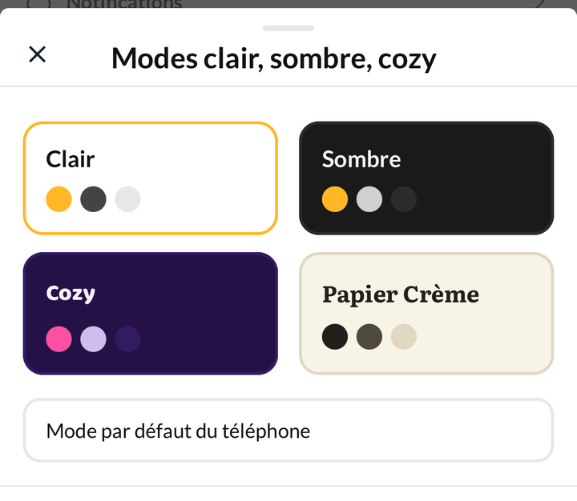
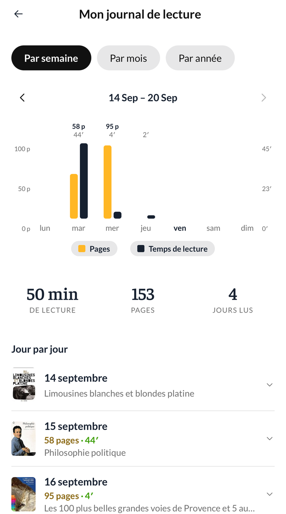

Version 0.206.0
Nouveautés
Quatre thèmes au choix

Clair, sombre, Cozy et Papier Crème. Le mode se change dans Réglages › Modes clair, sombre, cozy, et l'application entière suit — les couvertures, les graphiques et jusqu'aux polices de caractères.

Votre journal réunit le calendrier et les statistiques

Profil › Mon journal rassemble ce qui vivait à deux endroits. Trois échelles : par semaine pour voir vos pages et vos minutes jour après jour, par mois pour retrouver les livres refermés, par année pour la vue d'ensemble.
Sous le graphique de la semaine, chaque journée s'ouvre sur le détail de ses sessions.
Le tirage au sort, sur toutes vos étagères
Le dé ne fonctionnait que sur « À lire » et la wishlist. Il fonctionne maintenant sur n'importe quelle étagère, y compris celles que vous créez.
Corrections
- Les dates de lecture s'inscrivent de nouveau seules. Passer un livre à « Lu » ou « En cours » pose la date correspondante, quel que soit l'endroit d'où vous le faites : la fiche du livre, le scanner, le chronomètre, une sélection multiple. Le réglage se trouve dans Réglages › Date et statut de lecture automatique.
- Une session mal saisie se supprime. La croix était présente mais presque invisible ; elle se voit désormais dans l'historique du livre et dans le journal.
- La série de lecture s'ouvre au toucher sur toute la carte, même lorsqu'aucune série n'est en cours.
- L'écran des statistiques d'une année s'affiche en une seconde et demie au lieu de huit.